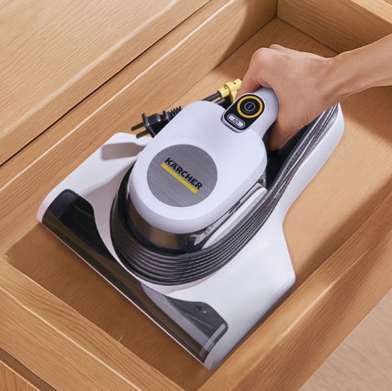
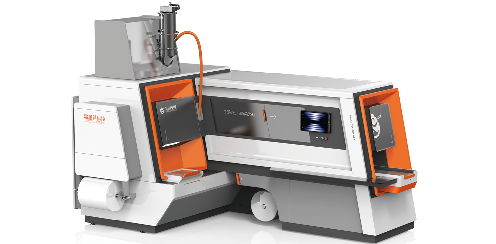
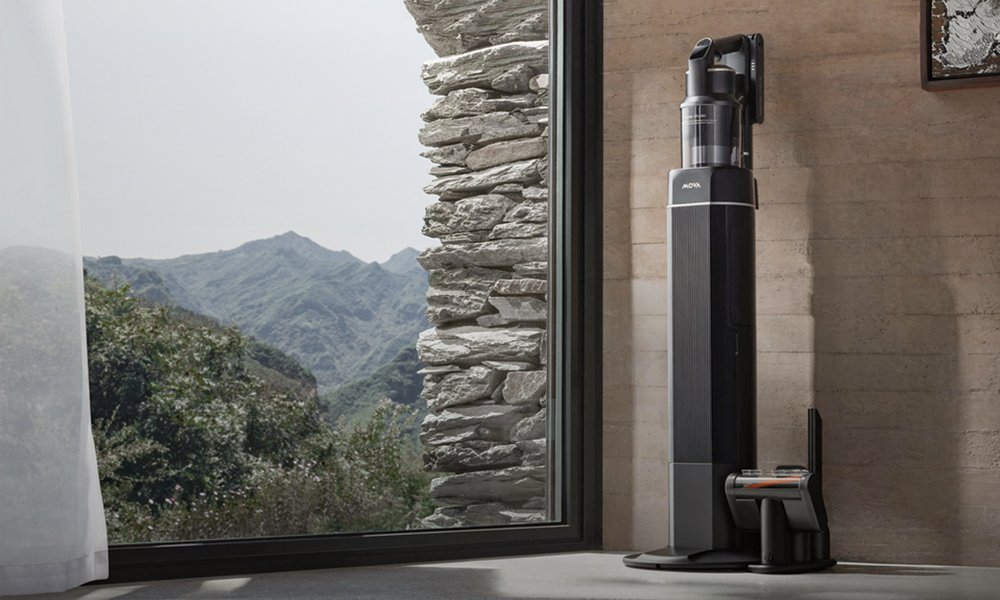
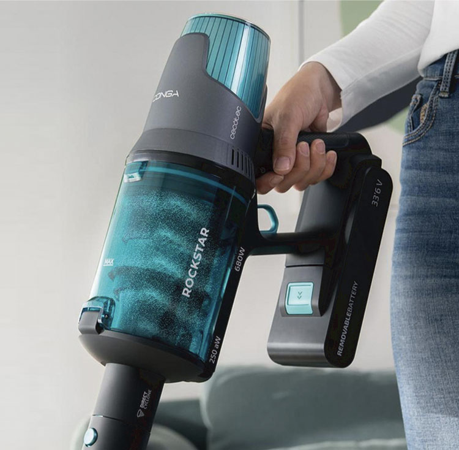

Latest Articles
最新文章

CMF趋势报告：2026年电动工具色彩与材料走向
从哑光黑到金属橙，从再生塑料到碳纤维复合材料——电动工具的CMF设计正在经历一场悄然的革命。本文解析最新趋势...

从贴牌到品牌：电动工具企业的设计转型路径
中国是全球电动工具最大的生产制造基地，但大多数工厂仍停留在OEM阶段。如何通过设计驱动品牌升级？本文给出实战建议...

清洁家电出海：从中国工厂到全球品牌的跨越
扫地机器人、洗地机正在成为中国家电出海的明星品类。但要在欧洲、北美市场建立品牌认知，需要的不仅是产品力...

手板验证为什么重要：避免量产翻车的第一道防线
很多设计问题只有在实际使用中才会暴露。手板制作是设计验证中不可省略的环节。本文详解如何高效利用手板验证...

用户访谈的陷阱：设计师常犯的5个错误
用户访谈是产品设计中最有价值的研究方法之一，但也最容易产生误导。如何避免常见陷阱，获取真正有价值的设计洞察...

为什么极简主义在电动工具设计中越来越流行
从博世到得伟，顶级电动工具品牌都在向更简洁的设计语言靠拢。这背后不仅是美学趋势，更是功能优化与成本控制的共同推动...
更多文章敬请期待